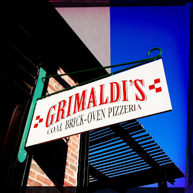

Recovered weblog entry
Grimaldi's

The only thing that could make it better is if we were in Brooklyn. I can deal. Plus, David Gray is on the PA. Lens: Watts
Film: Big Up

Recovered weblog entry

The only thing that could make it better is if we were in Brooklyn. I can deal. Plus, David Gray is on the PA. Lens: Watts
Film: Big Up